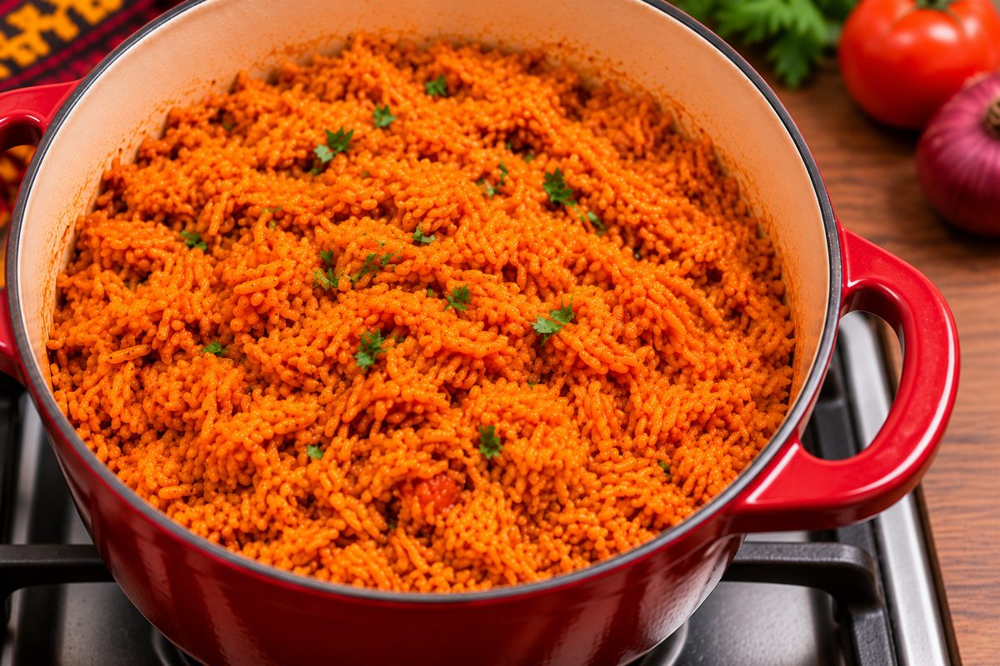

Orientation
Your rice looks done — but is it? Don’t decide by cooking time alone. Check five criteria before you take the pot off the heat.
Why it matters: These are the same criteria your finished dish will be judged against in the final performance.
What finished Jollof looks like

The five quality criteria
- 1Texture
Fully cooked, comfortably soft, generally whole and separate. No hard or undercooked portions, not excessively mushy.
- 2Appearance
An even red to deep-orange appearance, with the tomato mixture distributed throughout.
- 3Moisture
Not excessively wet or mushy, and not too dry. No unnecessary excess liquid.
- 4Aroma
An appealing cooked aroma, with no smell of burning or of undercooked tomato.
- 5Taste
Balanced seasoning — well-developed tomato flavour, appropriate salt, suitable pepper heat — and no unpleasant sour taste.
- Consistent colour throughout the pot
- No white patches of uncoated rice
- No uneven red or orange patches
- No portions that missed the tomato mixture
Before you take it off the heat
- Is the rice fully cooked?
- Are the grains comfortably soft and generally separate?
- Is the rice evenly coated with the tomato mixture, and is the colour consistent?
- Is the moisture level right?
- Is the seasoning balanced?
- Does it have an appealing aroma and taste?
- Are there any hard, undercooked or overly wet portions?
When the rice meets the criteria, remove it from the heat.
Quick check: is it ready?
Key takeaways
- Judge readiness by texture, appearance, moisture, aroma and taste — not by time.
- All five criteria must be met before you take it off the heat.
- Photos show texture and colour; only you can check aroma and taste.